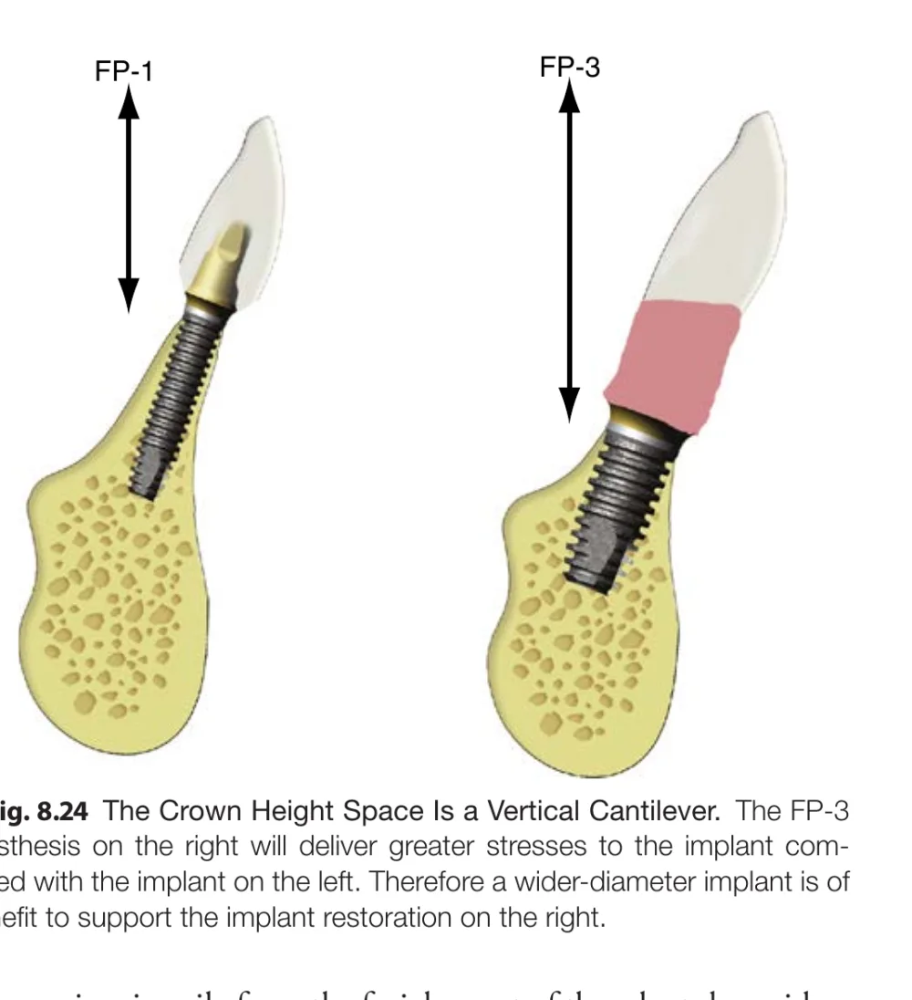
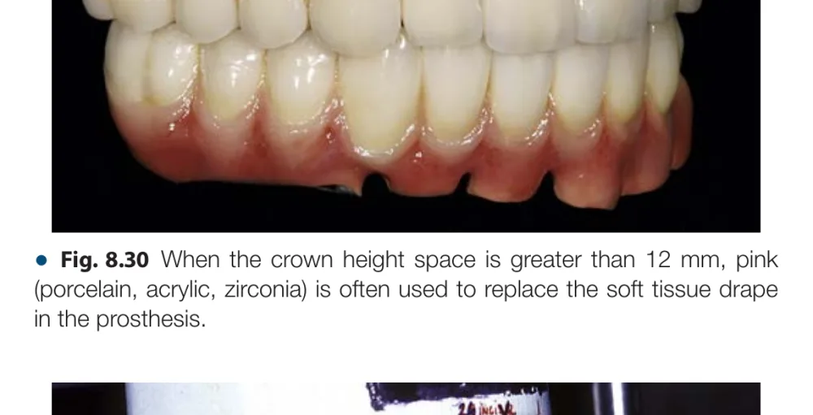

نسخه استخراجشده؛ ترجمه یا تأیید علمی انجام نشده است. وضعیت: captured
در یونیت پیش «ارتفاع تاج» را بهعنوان یکی از سه بازوی ممان دیدی. برای آن یک اصطلاح مستقل ساخته شده است، چون در پروتز واژهای برایش نبود.
ماجرا از این قرار است: «فاصلهی بینقوسی بهعنوان فاصلهی عمودی میان قوسهای دندانی ماگزیلا و مندیبل در شرایط مشخص تعریف میشود. ابعاد تنها یک قوس اصطلاح تعریفشدهای در پروتز ندارد؛ بنابراین اصطلاح فضای ارتفاع تاج (CHS) برای آن پیشنهاد شد.»
روش اندازهگیری — و به تفاوت نواحی دقت کن:
«CHS در دندانپزشکی ایمپلنت از کرست استخوان تا صفحهی اکلوزال در ناحیهی خلفی و تا لبهی انسیزال قوس مورد نظر در ناحیهی قدامی اندازهگیری میشود.»
و یک ظرافت در ناحیهی قدامی: «در نواحی قدامی دهان، وجود اوربایت عمودی یعنی CHS در ماگزیلا بزرگتر از فاصلهی کرست ریج تا لبهی انسیزال دندانهای مقابل است. بنابراین CHS قدامی مندیبل معمولاً از کرست ریج تا لبهی انسیزال مندیبل اندازهگیری میشود.»
محدودههای عددی — که باید حفظ کنی:
• «CHS ابعاد ایدهآل مشخصی ندارد.»
• «با رستوریشنهای ثابت، محدودهی قابلقبول CHS بین ۸ و ۱۲ میلیمتر است.»
• «رستوریشنهای متحرک ایمپلنت (اوردنچرهای RP-4 و RP-5) اغلب به CHS برابر ۱۲ میلیمتر یا بیشتر نیاز دارند، بهویژه وقتی یک بار ایمپلنتهای منفرد را به هم وصل میکند.»
• و برای بار اوردنچر: «تقریباً ۱۵ میلیمتر معمولاً لازم است، بهویژه اگر با پروتز آکریلی/دندان مصنوعی بازسازی شود.»
سه عدد را نگه دار: ۸ تا ۱۲ برای ثابت، بیش از ۱۲ برای متحرک، حدود ۱۵ برای بار اوردنچر.
و یک تفکیک بر حسب ماده که تازهتر است:
«زیرکونیای مونولیتیک نشان داده شده که با فضای بیناکلوزالی کم تا ۸ میلیمتر موفق است. برای بیشتر انواع دیگر مواد ترمیمی، فضای بیش از ۱۰ میلیمتر معمولاً اندیکاسیون دارد.»
پس انتخاب ماده، حد پایین CHS را جابهجا میکند — و در فضای تنگ، زیرکونیای مونولیتیک گزینهای است که سایر مواد نیستند.
و چرا اصلاً به این فضا نیاز است؟ دلایلش اینهاست: «این اندازهگیری، عرض بیولوژیک، ارتفاع اباتمنت برای گیر سمانی یا فیکساسیون پیچ پروتز، استحکام مادهی اکلوزال، زیبایی، و ملاحظات بهداشتی اطراف کراونهای اباتمنت را در نظر میگیرد.»
پنج نیاز مستقل که همگی در یک فضا جا میشوند — و به همین دلیل CHS کم هم، مثل CHS زیاد، مسئلهساز است.
و دلیل نیاز متحرک به فضای بیشتر: «دندانهای مصنوعی و استحکام بیس رزین آکریلی، اتچمنتها، بارها، و ملاحظات بهداشت دهان.» — یعنی چهار نیاز مستقل که همگی فضا میخواهند.
و مهمترین جملهی این بخش:
«افزایش عوارض پروتزی با CHS محدود یا بیشازحد رخ میدهد.»
هر دو سر طیف. این نکتهای است که اغلب فراموش میشود: CHS کم هم مسئلهساز است، نه فقط CHS زیاد.

اول مفهوم تشدیدکنندهی نیرو (force magnifier) را تعریف کنیم:
«تشدیدکنندههای نیرو موقعیتها یا ابزارهایی هستند که مقدار نیروی اعمالشده را افزایش میدهند و شامل پیچ، قرقره، سطح شیبدار، و اهرم میشوند. بیومکانیک CHS به مکانیک اهرم مربوط است.»
و نتیجهگیری کلیدی: «بهجای یک کانتیلور خلفی، CHS یک کانتیلور عمودی است وقتی هر بار جانبی یا کانتیلورشده اعمال شود، و بنابراین یک تشدیدکنندهی نیرو هم هست.»
ولی یک قید حیاتی دارد که نباید از قلم بیفتد:
«وقتی جهت یک نیرو در محور طولی ایمپلنت باشد، استرسهای وارد بر استخوان در رابطه با CHS تشدید نمیشوند.»
این جمله همهچیز را روشن میکند: CHS بالا بهخودیخود خطرناک نیست. CHS بالا بهعلاوهی بار غیرمحوری خطرناک است. و همین است که چرا طراحی اکلوزال در بیماران با CHS زیاد اینقدر اهمیت دارد.
و عددی که مقیاس تشدید را نشان میدهد:
«برای نمونه، زاویهی ۱۲ درجه با نیروی ۱۰۰ نیوتن به نیروی ۳۱۵ نیوتن بر میلیمتر روی ارتفاع تاج ۱۵ میلیمتری میانجامد.»
و بلافاصله: «دندانهای قدامی ماگزیلا معمولاً زاویهای برابر ۱۲ درجه یا بیشتر نسبت به صفحهی اکلوزال دارند.»
یعنی این ۱۲ درجه یک فرض نظری نیست؛ وضعیت معمول قدام ماگزیلاست. پس تشدید نیرو با زاویه در آن ناحیه، حالت معمول است نه استثنا.
و حلقهی بازخوردی که در یونیت پیش دیدی، اینجا صریح میشود:
«تحلیل استخوان کرستال اطراف ایمپلنت، CHS را افزایش میدهد و بنابراین نیروهای ممان وارد بر ایمپلنت و اجزای پروتز را زیاد میکند.»
و یک پیامد جراحی که کمتر به آن فکر میشود: «وقتی ارتفاع استخوان در دسترس هم کاهش یافته باشد، CHS افزایش مییابد. بنابراین طول بالقوهی ایمپلنت در شرایط CHS بیشازحد کاهش مییابد، و موقعیت ایمپلنت به بارهای آفست میانجامد.»
سه ضربهی همزمان: بازوی بلندتر، ایمپلنت کوتاهتر، و موقعیت نامناسبتر. همه از یک علت.
و راهکارها وقتی CHS زیاد است:
«افزایش شمار ایمپلنت، اندازه، و سطح طراحی، اسپلینت کردن ایمپلنتها، کوتاه کردن کانتیلورها، در نظر گرفتن رستوریشنهای متحرک، افزودن پشتیبانی بافت نرم در اوردنچرها.»
به دو مورد آخر دقت کن — باید پذیرفت که گاهی پاسخ درست به CHS زیاد، تغییر نوع پروتز است، نه تقویت پروتز ثابت. این گزینه باید از همان ابتدا در طرحریزی مطرح شود.
و دو محدودیت مادهای در CHS زیاد:
• «وقتی فضای ارتفاع تاج بیش از ۱۲ میلیمتر است، صورتی (پرسلن، آکریلیک، زیرکونیا) اغلب برای جایگزینی درپ بافت نرم در پروتز به کار میرود.»
• «ضخامت پرسلن برای پروتزهای ثابت نباید بیش از ۲ میلیمتر باشد.»
و حالا عددی که بحث «طول ایمپلنت» را برای همیشه میبندد:
یک واقعیت کلیدی: «بیشتر نیروهای اعمالشده بر بدنهی ایمپلنت استئواینتگرهشده در ۷ تا ۹ میلیمتر کرستالِ استخوان متمرکز میشوند، صرفنظر از طراحی ایمپلنت و تراکم استخوان.»
و نتیجهگیری صریح: «بنابراین ارتفاع بدنهی ایمپلنت روش مؤثری برای مقابله با اثرات ارتفاع تاج بهخطرافتاده نیست.»
هفت تا نه میلیمتر. هر میلیمتری که پایینتر از این ناحیه اضافه کنی، عملاً بار نمیگیرد. و تنها یک استثنا وجود دارد: «مگر در کیفیت استخوانی بسیار ضعیف.»
و یک تصحیح مفهومی مهم:
«نسبت تاج به ریشه یک مفهوم پروتزی است که ممکن است دندانپزشک ترمیمی را در ارزیابی یک تکیهگاه دندان طبیعی راهنمایی کند. هرچه ریشهی دندان طبیعی بلندتر، ارتفاع تاج کوتاهتر، که مانند اهرمی عمل میکند تا دندان را حول محوری که در حدود دو سوم طول ریشه (از کرست بهسمت اپکس) قرار دارد بچرخاند. با این حال، نسبت ارتفاع تاج به ایمپلنت یک مقایسهی مستقیم نیست.»
یعنی «نسبت تاج به ایمپلنت» را نباید مثل «نسبت تاج به ریشه» به کار برد — چون دندان حول نقطهای در حدود دو سوم طول ریشه میچرخد، ولی ایمپلنت چنین نقطهی چرخشی ندارد و بارش در کرست متمرکز است.
و عددی برای اثر ارتفاع تاج بر ممان:
وقتی کانتیلوری روی ایمپلنت گذاشته شود، شش نقطهی چرخش بالقوه (ممان) روی بدنهی ایمپلنت وجود دارد. و «وقتی ارتفاع تاج از ۱۰ به ۲۰ میلیمتر افزایش یابد، دو تا از این شش ممان ۲۰۰ درصد افزایش مییابند.»
و اثر زاویه، جدا از ارتفاع:
«یک بار زاویهدار به کراون نیز نیروی اعمالشده بر ایمپلنت را تشدید میکند. یک نیروی ۱۲ درجه به ایمپلنت، ۲۰ درصد افزایش مییابد. این افزایش با ارتفاع تاج بیشتر تشدید میشود.»
دو تشدیدکننده که روی هم ضرب میشوند: زاویه (۲۰ درصد) و ارتفاع تاج. و همین است که مثال ۱۰۰ نیوتن را به ۳۱۵ نیوتن بر میلیمتر میرساند.
و هشدار: این وضعیت در قدام ماگزیلا عادی است: «حتی ایمپلنتهایی که در موقعیت ایدهآل کاشته شدهاند معمولاً با زاویه بارگذاری میشوند. کراونهای قدامی ماگزیلا اغلب بلندتر از هر دندان دیگری در قوساند، پس اثرات ارتفاع تاج خطر بیشتری ایجاد میکند.»
و در اکسکورسیون بدتر هم میشود: «زاویهی گاید انسیزال ممکن است ۲۰ درجه یا بیشتر باشد. بنابراین کراونهای ایمپلنت قدامی حین اکسکورسیون با زاویهی قابلتوجهی نسبت به موقعیت محور طولی ایمپلنت بارگذاری میشوند. در نتیجه، افزایش نیرو به ایمپلنتهای قدامی ماگزیلا باید در طرح درمان جبران شود.»
و چرا ایمپلنت اغلب لینگوالتر میافتد: «کاهش عرض استخوان عمدتاً از جنبهی فاسیال ریج بیدندان است. در نتیجه، ایمپلنتها اغلب لینگوالتر از مرکز ریشهی دندان طبیعی کاشته میشوند. این وضعیت اغلب به رستوریشنی کانتیلورشده بهسمت فاسیال میانجامد.» — و نیروهای کانتیلورشده به فاسیال و لینگوال را بارهای آفست (offset loads) مینامند.
و اعدادی که نشان میدهند چرا این بحث اهمیت دارد:
این را جدی بگیر: «نرخ عوارض مکانیکی پروتزهای ایمپلنت اغلب بالاترین نرخ در میان همهی عوارض گزارششده در ادبیات است» — چند نمونه:
• خطر شکست پروتز مقابل با میانگین ۱۲ درصد در اوردنچرهای ایمپلنت مقابل یک دنچر افزایش مییابد
• در پروتزهای پارسیل ثابت ایمپلنت با ونیر رزینی، ۲۲ درصد ونیرها شکستند
• شکست کلیپس یا اتچمنت در اوردنچرها ممکن است بهطور میانگین ۱۷ درصد باشد
و یک اصل که از یونیت پیش میشناسی: «هرچه نیرو بیشتر، شمار چرخههای پیش از شکست کمتر، پس بروز افزایش مییابد.» و «تحلیل استخوان کرستال نیز ممکن است به نیروهای بیشازحد مربوط باشد و اغلب پیش از شکست بدنهی ایمپلنت رخ میدهد.»
یعنی تحلیل کرستال، هشدار زودهنگام شکست مکانیکی است — و اگر به آن توجه شود، شکست قابل پیشگیری است.
